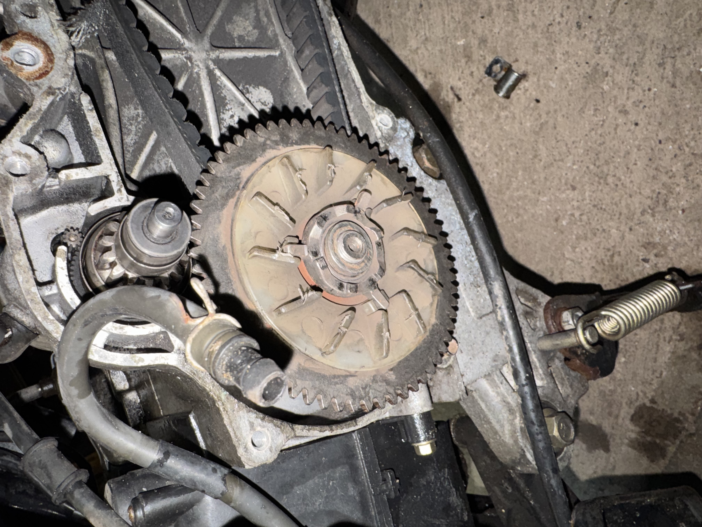

Erst prüfen, dann entscheiden.
Jeder Fall wird sorgfältig geprüft — mit einer klaren Antwort, was reparierbar, ersetzbar oder verbesserungswürdig ist.
Vier Kategorien, ein Anspruch.
Elektronik
Geräte, Steckverbinder, kleine Platinen, Verkabelungsprobleme und zerstörungsfreie Fehlersuche.
Gehäuse & Halterungen
Kaputte Abdeckungen, Halterungen, Halter, Beschläge und kleine Funktionsteile.
Ersatzdrucke
Ersatzdrucke, stärkere Revisionen und Teile, die eine sauberere Passform brauchen.
Neukonstruktion
Wenn ein direkter Ersatz nicht möglich ist, schließt ein neues Teil oder Redesign die Lücke.

Erfahrung mit Autos und Mopeds.
Die Erfahrung umfasst Instandsetzung und Wartung von Fahrzeugen wie Autos und Mopeds — von der Diagnose bis zur fertigen Reparatur.
Ehrliche Einschätzung zuerst.
Details schicken, auch wenn der Fall ungewöhnlich ist. Wenn eine Reparatur sinnvoll möglich ist, wird das klar gesagt. Wenn ein Ersatz oder Redesign mehr Sinn ergibt, wird stattdessen das empfohlen.
Aktuelle Reparatur- und Servicearbeiten.
